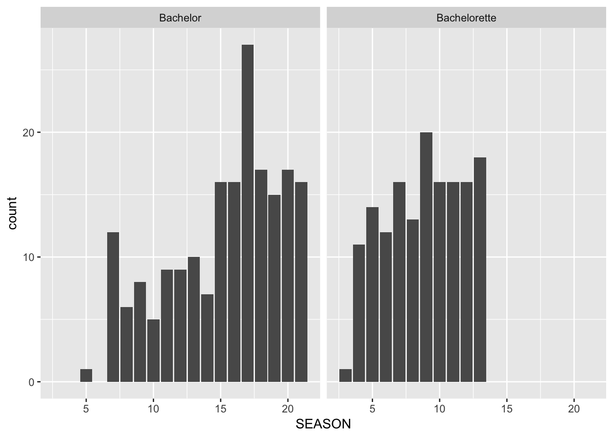

This is a lesson on tidying data, remixed from Jenny Bryan’s similar lesson using “Lord of the Rings” data. Most text + code is Jenny’s, basically we plopped a new dataset in there 😉
An important aspect of “writing data for computers” is to make your data tidy. Key features of tidy data:
But unfortunately, untidy data abounds. In fact, we often inflict it on ourselves, because untidy formats are more attractive for data entry or examination. So how do you make untidy data tidy?
We now import the untidy data from the eight series that was presented in the intro.
I assume that data can be found as eight plain text, delimited files, one for each film, each with the filename series*.csv. How to liberate data from spreadsheets or tables in word processing documents is beyond the scope of this tutorial.
The files live here in this repo, which you could clone as a new RStudio Project. We’ll use a neat trick to read in all 8 csv files at once:
☝️ My first #rstats tip: use purrr::map_df() to read all .csv files in a 📂 and stick them in a single data frame:
— We are R-Ladies (@WeAreRLadies) August 29, 2018
f <- list.files(
“my_folder”,
pattern = “*.csv“,
full.names = TRUE)
d <- purrr::map_df(f, readr::read_csv, .id =”id“) pic.twitter.com/JWxI5ecr0k
You do not need to know how the below code works- please treat it like a magic black box for now! You’ll learn more about these packages and functions in the third course of this series.
library(tidyverse)
bakes_untidy <- fs::dir_ls(path = here::here("data"),
regexp = "series\\d.csv") %>%
purrr::map_df(readr::read_csv)We now have one data frame with bake counts for all 8 series, across both the signature and showstopper challenges.
bakes_untidy
#> # A tibble: 16 x 4
#> series challenge cake pie_tart
#> <int> <chr> <int> <int>
#> 1 1 showstopper 5 5
#> 2 1 signature 12 4
#> 3 2 showstopper 8 17
#> 4 2 signature 21 7
#> 5 3 showstopper 12 17
#> 6 3 signature 24 12
#> 7 4 showstopper 27 9
#> 8 4 signature 11 15
#> 9 5 showstopper 20 6
#> 10 5 signature 4 7
#> 11 6 showstopper 12 0
#> 12 6 signature 20 17
#> 13 7 showstopper 19 3
#> 14 7 signature 11 10
#> 15 8 showstopper 26 12
#> 16 8 signature 21 8
glimpse(bakes_untidy)
#> Observations: 16
#> Variables: 4
#> $ series <int> 1, 1, 2, 2, 3, 3, 4, 4, 5, 5, 6, 6, 7, 7, 8, 8
#> $ challenge <chr> "showstopper", "signature", "showstopper", "signatur...
#> $ cake <int> 5, 12, 8, 21, 12, 24, 27, 11, 20, 4, 12, 20, 19, 11,...
#> $ pie_tart <int> 5, 4, 17, 7, 17, 12, 9, 15, 6, 7, 0, 17, 3, 10, 12, 8Assembling one large data object from lots of little ones is common data preparation task. When the pieces are as similar as they here, it’s nice to assemble them into one object right away. In other scenarios, you may need to do some remedial work on the pieces before they can be fitted together nicely.
A good guiding principle is to glue the pieces together as early as possible, because it’s easier and more efficient to tidy a single object than 20 or 1000.
We are still violating one of the fundamental principles of tidy data. “Bake count” is a fundamental variable in our dataset and it’s currently spread out over two variables, cake and pie_tart. Conceptually, we need to gather up the bake counts into a single variable and create a new variable, n_bakes, to track whether each count refers to cakes or pies/tarts. We use the gather() function from the tidyr package to do this.
bakes_tidy <-
gather(bakes_untidy, key = 'type_bake', value = 'n_bakes', cake, pie_tart)
bakes_tidy
#> # A tibble: 32 x 4
#> series challenge type_bake n_bakes
#> <int> <chr> <chr> <int>
#> 1 1 showstopper cake 5
#> 2 1 signature cake 12
#> 3 2 showstopper cake 8
#> 4 2 signature cake 21
#> 5 3 showstopper cake 12
#> 6 3 signature cake 24
#> 7 4 showstopper cake 27
#> 8 4 signature cake 11
#> 9 5 showstopper cake 20
#> 10 5 signature cake 4
#> # ... with 22 more rowsTidy data … mission accomplished!
To explain our call to gather() above, let’s read it from right to left: we took the variables cake and pie_tart and gathered their values into a single new variable n_bakes. This forced the creation of a companion variable type_bake, a key, which tells whether a specific value of n_bakes came from cake or pie_tart. All other variables, such as challenge, remain unchanged and are simply replicated as needed. The documentation for gather() gives more examples and documents additional arguments.
Now we write this multi-series, tidy dataset to file for use in various downstream scripts for further analysis and visualization. This would make an excellent file to share on the web with others, providing a tool-agnostic, ready-to-analyze entry point for anyone wishing to play with this data.
write_csv(bakes_tidy, path = file.path("data", "bakes_tidy.csv")) You can inspect this delimited file here: bakes_tidy.csv.
Choose one of three tidying adventures:
BacheloretteFollow along with these code prompts:
bach <- read_csv("https://raw.githubusercontent.com/fivethirtyeight/data/master/bachelorette/bachelorette.csv",
col_types = cols(SEASON = col_integer()))#> # A tibble: 1,232 x 5
#> SHOW SEASON CONTESTANT week eliminated
#> <chr> <int> <chr> <dbl> <chr>
#> 1 Bachelorette 13 13_BRYAN_A 1 R1
#> 2 Bachelorette 13 13_BLAKE_K 1 E
#> 3 Bachelorette 13 13_GRANT_H 1 E
#> 4 Bachelorette 13 13_JEDIDIAH_B 1 E
#> 5 Bachelorette 13 13_KYLE_S 1 E
#> 6 Bachelorette 13 13_MICHAEL_B 1 E
#> 7 Bachelorette 13 13_MILTON_L 1 E
#> 8 Bachelorette 13 13_MOHIT_S 1 E
#> 9 Bachelorette 13 13_ROB_H 1 E
#> 10 Bachelorette 12 12_JORDAN_R 1 R1
#> # ... with 1,222 more rowsUse this code template if you want some help getting there:
b_tidy <- bach %>%
filter(!SEASON == "SEASON") %>%
select(SHOW, SEASON, CONTESTANT, starts_with("ELIMINATION")) %>%
gather(key = <what is the key var you want?>,
value = <what is the value var you want?>,
<select which vars you want to gather?>,
na.rm = TRUE) %>%
mutate(week = str_replace(week, "-", "_"),
week = parse_number(week))
b_tidy
update this link once up on github
untidy_bikes <- read_csv("https://raw.githubusercontent.com/apreshill/bakeoff-tidy/master/data/untidy-bike-counts.csv")untidy_flying <- read_csv("https://raw.githubusercontent.com/fivethirtyeight/data/master/flying-etiquette-survey/flying-etiquette.csv")
# Fill in code below
rude_tidy <- flying %>%
# Change characters to factors
mutate_if(is.character, as.factor) %>%
# Filter out those who have never flown on a plane
filter(`How often do you travel by plane?` != "Never") %>%
# select columns containing "rude"
select(RespondentID, contains("rude")) %>%
# change format from wide to long
gather(response_var, value, -RespondentID) %>%
mutate(rude = if_else(str_detect(value, "Yes"), 1, 0))
#> Error in eval(lhs, parent, parent): object 'flying' not found
# Make a two column dataset with variable names and number of levels
number_of_levels <- responses_as_factors %>%
summarise_all(nlevels) %>%
gather(variable, num_levels)
#> Error in eval(lhs, parent, parent): object 'responses_as_factors' not found
mtcars %>%
top_n(2, mpg) %>%
pull(mpg)
#> [1] 32.4 33.9The word count data is given in these two untidy and gender-specific files:
Write an R script that reads them in and writes a single tidy data frame to file. Literally, reproduce the lotr_tidy data frame and the lotr_tidy.csv data file from above.
Write R code to compute the total number of words spoken by each race across the entire trilogy. Do it two ways:
lotr_tidy data frame as input.Reflect on the process of writing this code and on the code itself. Which is easier to write? Easier to read?
Write R code to compute the total number of words spoken in each film. Do this by copying and modifying your own code for totalling words by race. Which approach is easier to modify and repurpose – the one based on multiple, untidy data frames or the tidy data?
It is untidy to have have data parcelled out across different files or data frames. We used dplyr::bind_rows() above to combine film-specific data frames into one large data frame.
It is untidy to have a conceptual variable, e.g. “word count”, spread across multiple variables, such as word counts for males and word counts for females. We used the gather() function from the tidyr package to stack up all the word counts into a single variable, create a new variable to convey male vs. female, and do the replication needed for the other variables.
Many data analytic projects will benefit from a script that marshals data from different files, tidies the data, and writes a clean result to file for further analysis.
Watch out for how untidy data seduces you into working with it more than you should:
In the next lesson 03-spread I show to untidy data, using spread() from the tidyr package. This might be useful at the end of an analysis, for preparing figures or tables.
In the optional bonus content, I show how to tidy this data using only base R functions.